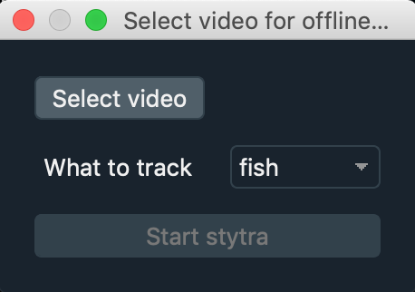

Offline use of Stytra¶
Setting up and running video tracking¶
With Stytra installed, start the offline tracking script by running:
python -m stytra.offline.track_videoThis will open the following window:

Choose an input video file and what you want to track (tail, eyes, tail and eyes, or freely swimming fish). Then click the “Start Stytra” button. This will open the Stytra interface:

In the stytra GUI window, adjust the tracking parameters and if required the ROIs for tail and/or eyes. Please see the corresponding documentation section for hints on this procedure. Take your time for the adjustments until you are happy with the plot streamed in the window: when you start the tracking it will analyse the entire video anyway (including the part already played).
Click the Track video button in the toolbar. The video and the stream plot will freeze, and a progress bar will appear showing the progress of the tracking.

When it is done, the program exit and saves an output file with the tracked quantities. It will have the same name and folder as the input video, with an extension corresponding to the chosen output format.
Automatic batch-processing¶
If you want to batch process multiple videos with the same parameters, running the Stytra pipeline through a script or notebook might be convenient. For this, please refer to the analyses in notebook repository. You can save the parameters that you choose during the Stytra session with the “Save tracking params” button.